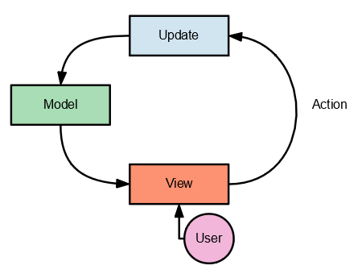

Funksjonell programmering
Fredrik Meyer
Created: 2018-11-14 Wed 21:01
Hva jeg skal snakke om
Om abstraksjoner og modularitet i programmering.
Og hvordan funksjonell programmering kan hjelpe oss med det.
Abstraksjoner
- Det hele startet i steinalderen.

Verktøy som vi forstår
- Spader, steiner, sakser.
- Delvis: blyant, penn…
Verktøy som vi ikke forstår
- Biler, trykkpresse, …
Verktøy som vi virkelig ikke forstår
- Datamaskiner
- Maskinkode
- iPhone
Abstraksjon er kompresjon
An abstraction can be seen as a compression process, mapping multiple different pieces of constituent data to a single piece of abstract data…
(Wikipedia)
Abstraksjon handler om å trekke ut det essensielle fra et objekt eller en prosess og glemme detaljer.
Modularitet
- Modularitet Å dele et system opp i gjenbrukbare og uavhengige komponenter.
Menneskekroppen
Samfunnet
- Ansvarsfordeling
- Veg, rettsvesen, helsevesen, sosialstøtte, osv.
- Uavhengige komponenter som fungerer autonomt.
- Kan bytte ut det norske med det svenske forsvaret uten særlig konsekvens.
Også programmer
- Vi lager metoder og funksjoner og pakker. Alle med spesifikke API-er.
- Database-tilkobling, domenelogikk, og webserving skjer i forskjellige deler av applikasjonen.
- Riktig grad av modularitet gjør det lettere å sette seg inn i ny kode.
Noen ord om tilstand
- Eksempel: nettside. Er boksen åpen eller lukket? Er det integralet allerede regnet ut? Hva er passordet til databasen?
- Vanskelig å holde styr på. En utfordring man gjerne ikke tenker på under studiene (!!).
- Metodikker og rammeverk for å holde orden på tilstand: React+Redux, strømmer, sentraliserte logger, osv…
Eksempel
s = 0 i = 0 while i < 10: s += i*i i += 1 return s
- i varierer i verdi.
- Hva om vi har to parallelle prosesser kjørende og den ene endrer på i?
- Utvid med mange flere tilstandsvariabler og prøv og resonnér.
Enveis dataflyt

Funksjonell programmering
- (Matematiske) funksjoner er den foretrukne abstrakjonsmekanismen.
- Vi er veldig forsiktige med tilstand.
- Funksjonelle språk: Haskell, Scheme, Clojure, Scala, Elm, Common Lisp, F#,…
- Språk med funksjonelle trekk: Javascript, Python, R, Rust, Java 8
Typiske språktrekk for funksjonelle språk
- Funksjoner som parametre
map(length, "hei", "din", "***")
- Ofte anonyme funksjoner (lambda-funksjoner)
wiggle = lambda x: x + random()
- Sterk typet.
static Integer lengthOfString(String string)
- Rene funksjoner / ingen sideeffekter
- Rekursjon i stedet for
for-løkker
Eksempel 1
names = ["Carl Friedrich", "Emmy", "Sofya", "Leonhard"] lengths = map(len, names) return lengths # => [14, 4, 5, 8]
len(en funksjon \(\mathrm{List}(T) \xrightarrow{\mathrm{len}} \mathbb N_0\)) er en parameter tilmap.
Eksempel 2
return reduce(lambda x, y: x + y, map(lambda i: i**2, range(10)), 0) # => 285
- Vi kvadrerer alle tallene i
range(10), og så reduserer vi dem medreduce.
Eksempel 3
p = lambda x: x**2 - 2 def find_zero(a, b, f): if abs(f(a)) < 0.0001: return a avg = 0.5*(a+b) if f(a)*f(avg) < 0: return find_zero(a, avg, f) else: return find_zero(avg, b, f) return find_zero(0, 5, p) # => 1.41418457031
- Finne nullpunkter ved todeling.
Eksempel 4
listOfNumbers.stream()
.map(n -> n*n)
.reduce((a,b) -> a + b, 0);
Java 8 innførte mange funksjonelle operasjoner.
listOfNames.stream()
.map(String::length)
.collect(Collectors.toList());
(legg merke til hvor mer deklarativt det er!)
Fordeler med funksjonell tankegang
- Funksjoner returnerer alltid det samme.
- Tilstand er lettere å resonnere om.
- Deklarativt (i stedet for imperativt).
Lærepenge
- Jeg trodde programmering handlet om algoritmer og smart kode.
- … men vel så mye om struktur (og argumenter).
- Og modularitet og riktige abstraksjoner.
- (litt som at matematikk ikke er kalkulus - det er også bevis, og grupper, og ringer, og kategorier!)
Funfact
"Alt" kan gjøres med kun lambda-funksjoner.
- Lynkurs i Scheme:
- Alt er en verdi eller en funksjon.
(lambda (x) (+ 1 x))plusser én påx.((lambda (x) (+ 1 x)) 1)vil returnere2.
Fakultet
((lambda (x) (x x)) (lambda (fact-gen) (lambda (n) (if (zero? n) 1 (* n ((fact-gen fact-gen) (sub1 n)))))))
Anbefalinger
- Kurset INF2410: funksjonell programmering i Scheme. Veldig morsomt.
- Seven Languages in Seven Weeks (bok)
- Hvis du skal lage nettside: Elm ;-). http://www.elm-lang.org
Objektorientert programmering
- Objekter er den foretrukne abstrakjonsmekanismen.
- Objekter har ansvaret for egne oppgaver - implementasjonen er uinteressant.
Eksempel
Car car = new Car(); Car secondCar = new Car(); car.setColor(RED);
Hva skjer med car == secondCar? Eller car.equals(secondCar)?